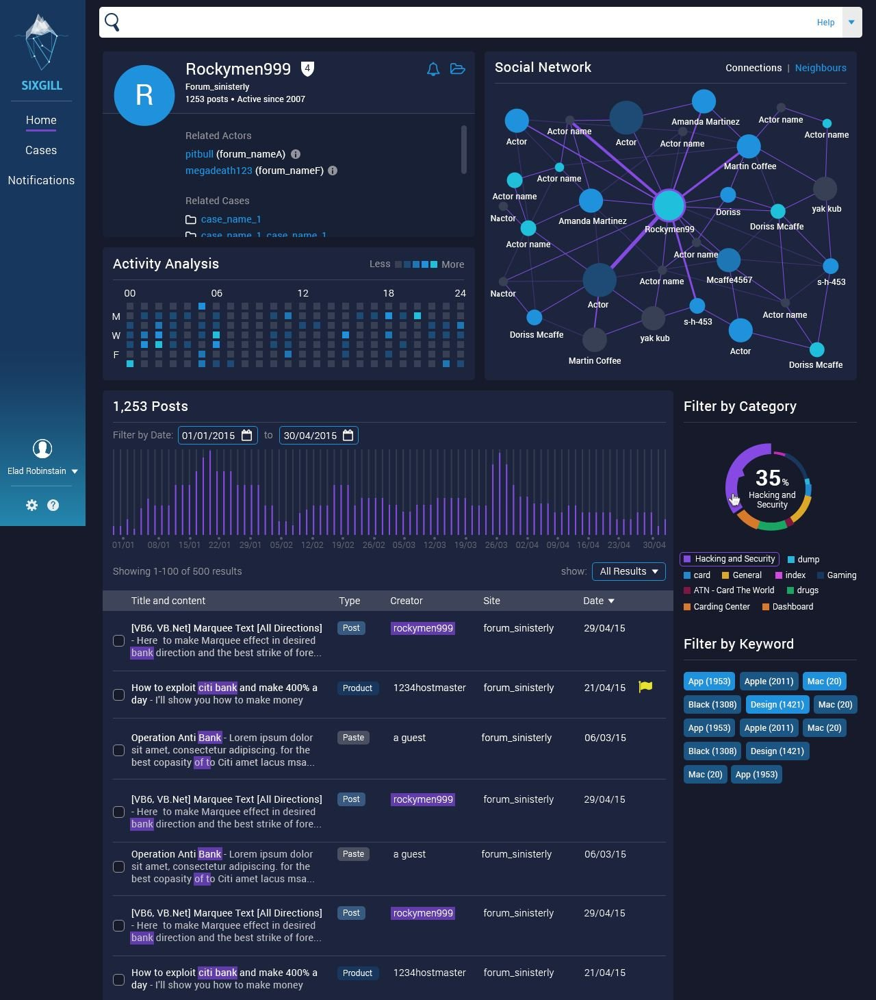
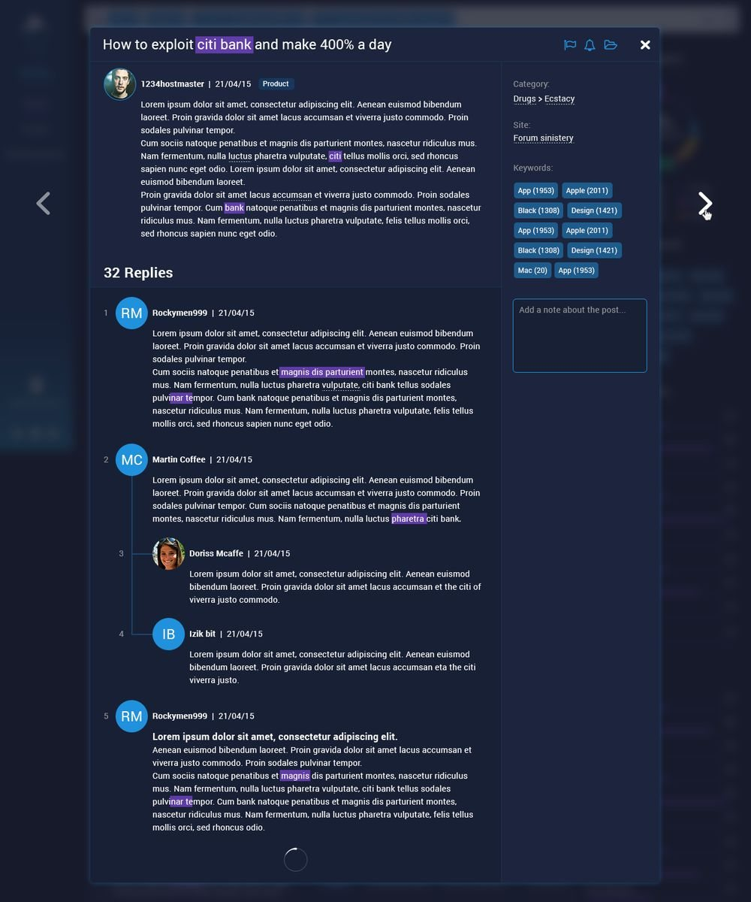
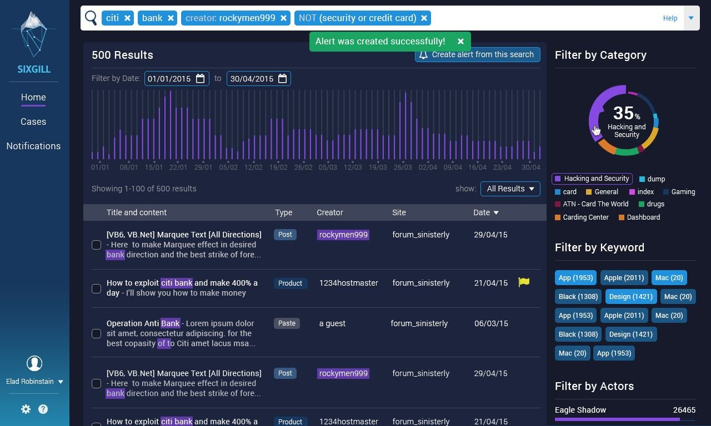
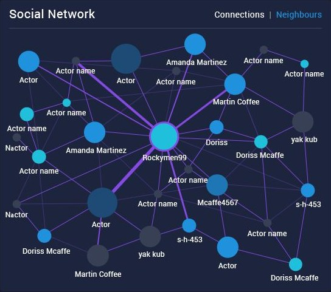
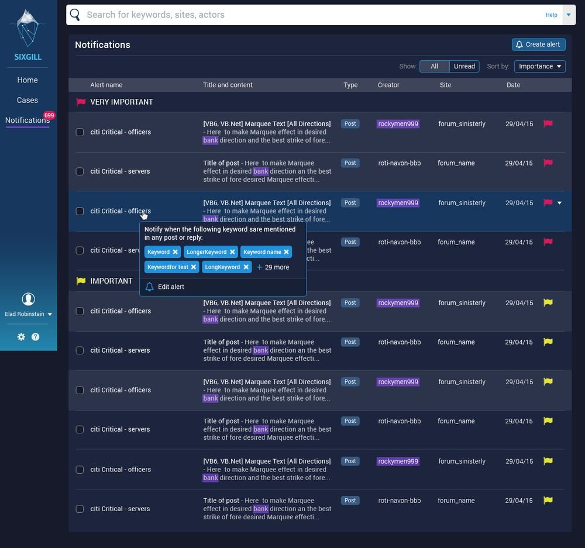
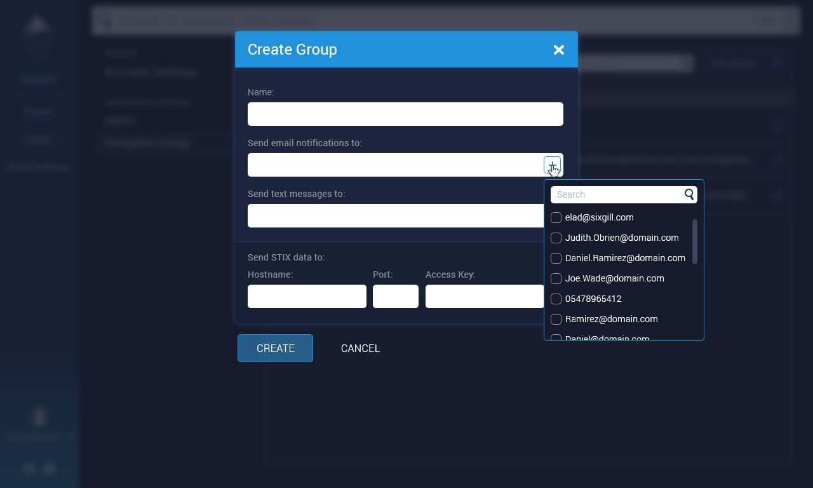

Sixgill monitors dark-web forums and marketplaces so threat analysts can spot leaked data and early signs of an attack. It came to Uniq UI with nothing: no product, no brand. I led the design concept and the brand, designed the core screens, then handed the rest of the platform to my team.
The raw material was a flood of unstructured posts, written by people who do not want to be found. The job was to show analysts the trend, not the pile.
An actor's profile leads with patterns: when they post, who they talk to, what they write about. The posts come after. Open one and you get the thread, the metadata and a private note.


Every search returns hundreds of posts. Volume over time, a category split and keyword filters sit beside the results, so the trend is visible before anyone reads a single post.

The Social Network chart maps a threat actor's links to other actors and forum handles. It was the hardest visual problem on the project, and it became the platform's signature, the screen both analysts and Sixgill's leadership loved most.

Any search can become an alert. Alerts arrive sorted by severity and route to email, SMS or a STIX feed, so findings reach the tools a security team already runs.


Sixgill launched with a complete brand and platform designed from a blank page. The network chart became the thing people recognized it by.
One right visual can carry a product. People remembered Sixgill by its network chart.
Let's talk about what you're building.